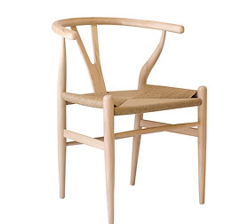
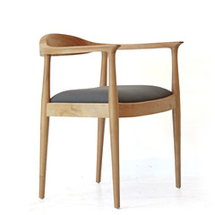
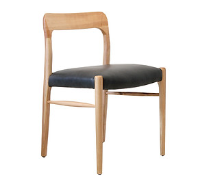
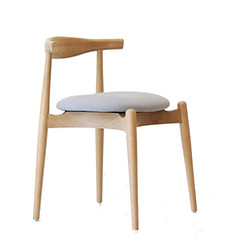
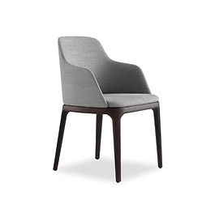
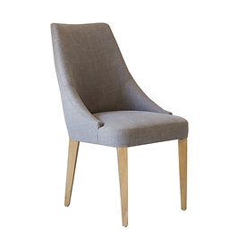

Mondony
Muebles, arte y diseño
Ecommerce Mondony

01 - Wishbone Chair
$ 34.000

02 - Silla Kennedy
$ 29.000

03 - Silla Moller Tapizada
$ 23.000

04 - Ch20 Elbow
$ 25.000

05 - Silla Grace
$ 39.000

06 - Silla Febo
$ 24.000